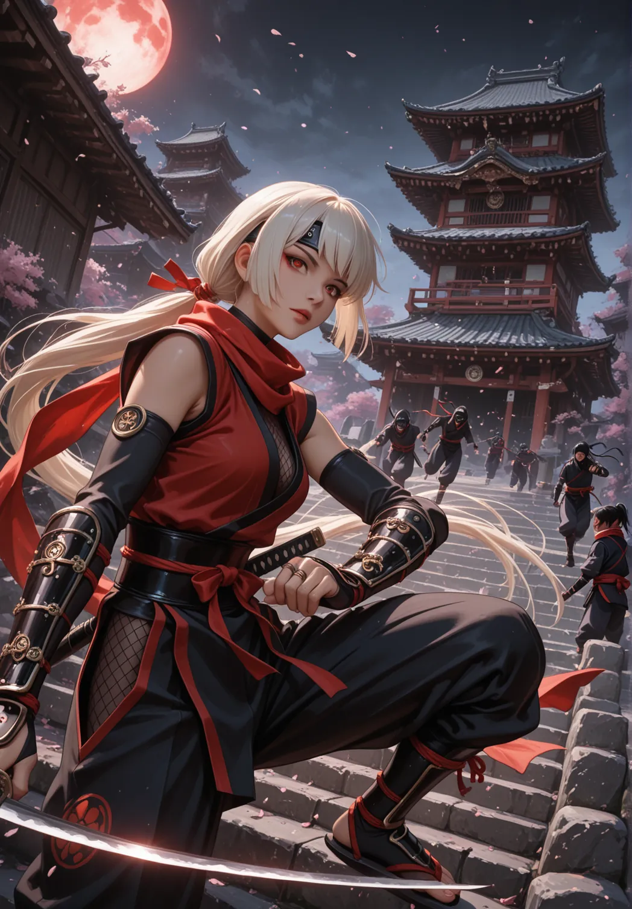

¿Qué es Nakama?El espíritu del juego
Qué es Nakama
Tienes en tus manos un juego que busca emular los mangas y animes enfocados al combate, pero que no dejan de lado la historia. Piensa en Naruto, Ninja Scroll, Basilisk, Los Caballeros del Zodiaco, Bola de Dragón, One Piece, Inuyasha, Bleach...
Los jugadores son Senshis, guerreros elegidos de entre cientos para defender sus Yosai (Fortalezas) y sus Kazoku (Casas), todo girando alrededor del Nakama, grupos de compañeros de distintos Kazokus que luchan juntos, aliados.
En Nakama es importante la lealtad, la amistad y la familia. Los personajes en Nakama no son simples guerreros, son aquellos en quienes toda su gente confía para defenderlos.
Autores
Jose Casado, Xavier Borrut, Daniel Rosas, Daniel Lorente, Txell Pérez y Miguel Angel Zarza.
Agradecimientos
Jon Perojo, Eusebi Vazquez, Nuria Casellas, Clara Jauregui, Laia Andreu, Manuel Lopez, Belen Berenguel, Teresa Villagrán, Craig.
